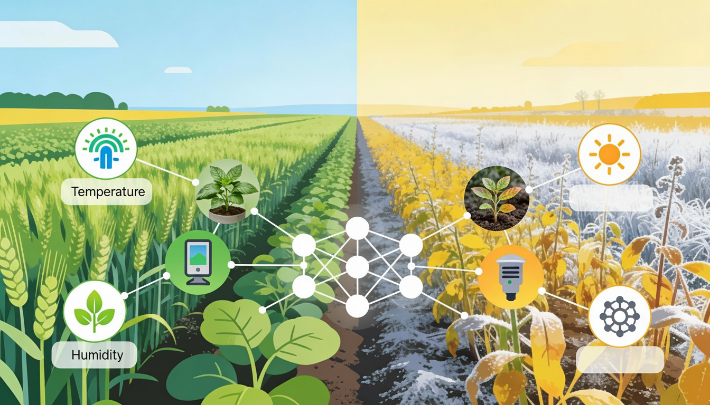

Ecovision : Deep Learning Model for Seasonal Detection
Advanced AI System for Seasonal Change Detection in Plants
Accuracy Rate
ML Models Tested
Images Analyzed
Environmental Parameters
Revolutionary Approach to Seasonal Plant Detection
Our deep learning system analyzes plant images and environmental parameters to identify seasonal changes and patterns. By combining visual plant characteristics with environmental data, we provide accurate seasonal detection through advanced AI techniques.
Learn MorePlant Image Processing
Advanced image analysis techniques to extract meaningful features from plant photographs
Environmental Parameter Analysis
Comprehensive evaluation of environmental factors including temperature, humidity, and weather patterns
Deep Learning Analysis
State-of-the-art neural networks trained to identify seasonal patterns and changes in plant characteristics
Seasonal Detection
Accurate identification of seasonal changes enabling proactive agricultural and environmental management
Frequently Asked Questions
Common questions about seasonal detection using plant images and environmental parameters
How does plant image analysis help detect seasonal changes?
Plant images reveal visual characteristics that change with seasons, including leaf color, growth patterns, flowering stages, and overall plant morphology. Our deep learning system analyzes these visual features combined with environmental parameters to accurately identify seasonal transitions and patterns.
What type of plant images are required for analysis?
The system works with standard plant photographs captured using digital cameras or smartphones. High-resolution images that clearly show plant features, leaves, flowers, and overall structure provide the best results for accurate seasonal detection and analysis.
What environmental parameters are used in the analysis?
The system analyzes various environmental parameters including temperature, humidity, precipitation, sunlight hours, soil moisture, and weather patterns. These parameters are combined with plant images to provide comprehensive seasonal detection and analysis.
What features does the deep learning system analyze in plant images?
The system examines multiple plant features including leaf color, size, shape, texture, flowering patterns, growth stages, and overall plant morphology. These features are processed through advanced neural networks to identify patterns associated with seasonal changes.
How quickly can plant images be analyzed?
The deep learning system processes plant images rapidly, typically generating analysis results within minutes. The automated workflow ensures efficient processing while maintaining high accuracy in feature extraction and seasonal detection.
What information is included in the analysis reports?
Analysis reports include visual annotations highlighting significant plant features, seasonal classification, detailed feature analysis, environmental parameter correlations, and comprehensive findings. The reports are designed to support agricultural and environmental decision-making with clear, interpretable results.